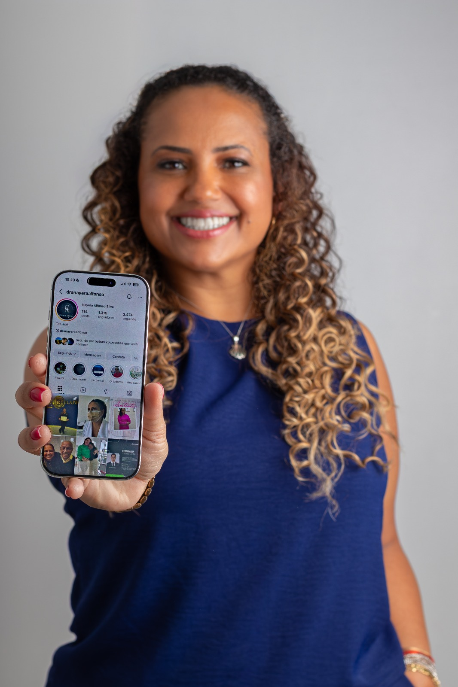
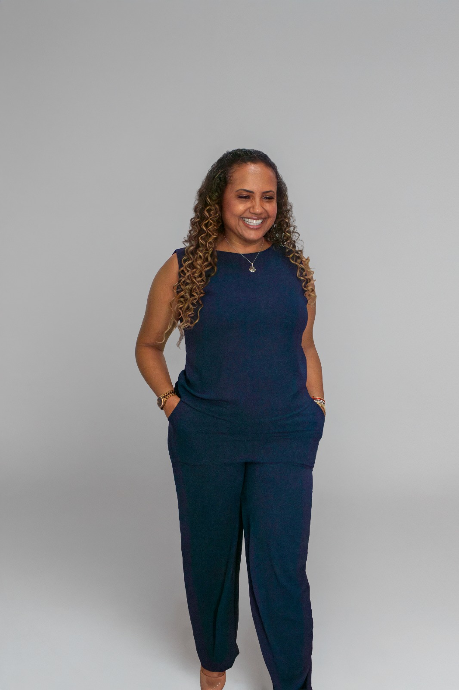
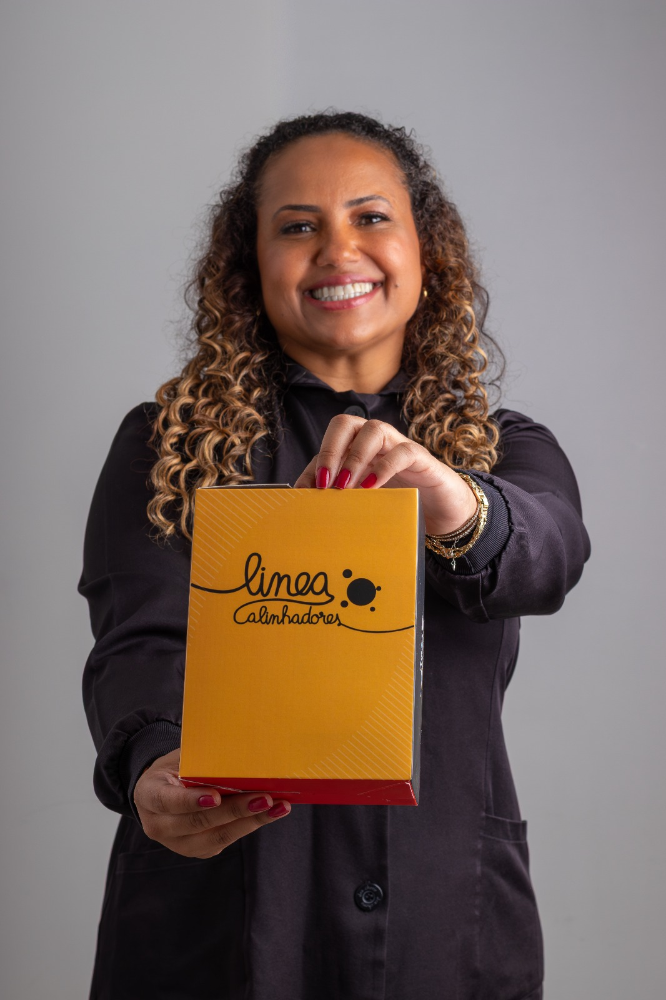
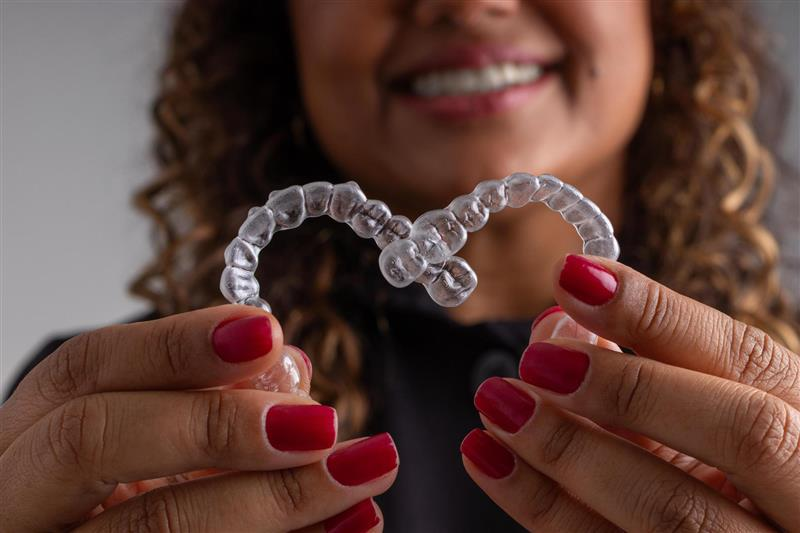

A arte de esculpir sorrisos perfeitos.
Combinamos tecnologia digital, precisão estética e um acolhimento caloroso para revelar a sua melhor expressão com naturalidade.
Tecnologia de Precisão
Equipamentos de última geração para diagnósticos e procedimentos com acurácia milimétrica e absoluto conforto.
Cuidado Humanizado
Uma experiência acolhedora e empática, focada integralmente no seu bem-estar, escuta ativa e tranquilidade.
Excelência Comprovada
Rigor técnico e refinamento artístico para entregar resultados estéticos harmônicos que superam todas as expectativas.
Bem-vindo à Clínica Alfonso
"Cada sorriso tem uma história única — e o seu tratamento deve ser desenhado sob medida."
Aqui, a odontologia transcende o procedimento convencional. É o ponto de encontro entre a ciência médica, a tecnologia digital e o olhar artístico, criando um espaço onde cuidar do sorriso é um momento de autocuidado e bem-estar.
Com um consultório moderno e estruturado no Tatuapé, oferecemos tratamentos integrados que devolvem a saúde mastigatória e elevam a sua autoconfiança.

Tratamentos Sob Medida
Especialidades planejadas com atenção a cada detalhe anatômico para harmonizar saúde bucal e beleza com sofisticação.
Implantes Dentários
Recupere a estabilidade, a função mastigatória e a segurança com implantes osseointegrados de última geração.
Lentes de Contato
Lâminas de porcelana ultrafinas desenhadas digitalmente para harmonizar textura, contorno e luminosidade do seu sorriso.
Clareamento Dental
Técnicas clínicas seguras e eficazes para conquistar dentes mais claros e radiantes com proteção do esmalte dental.
Clínica Geral & Prevenção
Check-ups minuciosos, profilaxia e odontologia preventiva contínua para preservar a integridade da sua saúde bucal.
A confiança de quem viveu a transformação
"Estar nas mãos de quem une precisão técnica e cuidado humano faz toda a diferença."
Nossos parceiros e pacientes experimentam na prática o padrão Alfonso: pontualidade rigorosa, diagnósticos transparentes e procedimentos planejados para valorizar a sua identidade natural com total segurança.
Nossa Abordagem
O caminho para o sorriso perfeito é um processo transparente, previsível e construído em harmonia com você.
Diagnóstico Digital e Imersivo
Utilizamos registros de alta definição e análise anatômica detalhada para mapear cada necessidade e desenhar o planejamento ideal.
Planejamento Personalizado
Você participa ativamente da concepção do seu novo sorriso. Simulamos a harmonia estética e funcional antes do início dos procedimentos.
Execução com Maestria
Nossa equipe executa cada etapa com rigor cirúrgico e sensibilidade artística, proporcionando conforto pleno em todas as sessões.
Acompanhamento Contínuo
Nosso compromisso perdura após a conclusão do tratamento, com rotinas preventivas que garantem longevidade e brilho ao seu sorriso.
Conheça Nosso Espaço
Um consultório concebido para oferecer privacidade, tranquilidade e uma experiência odontológica verdadeiramente agradável.



Perguntas Frequentes
Tudo o que você precisa saber para planejar sua visita à Clínica Alfonso com total clareza.
Nosso atendimento é exclusivamente particular para garantir tempo dedicado, biossegurança rigorosa e os melhores materiais do mercado. Fornecemos toda a documentação, laudos e recibos detalhados para que você possa solicitar o reembolso integral ou parcial junto ao seu plano de saúde.
Com o planejamento digital atual e lâminas ultrafinas de porcelana E-Max, o preparo é minimamente invasivo ou muitas vezes nulo, preservando ao máximo a estrutura original do dente com naturalidade e saúde biológica.
O procedimento é completamente indolor. Utilizamos técnicas anestésicas avançadas e planejamento guiado por imagem computadorizada. O pós-operatório costuma ser extremamente suave e tranquilo com os medicamentos prescritos.
Sim! Estamos situados na Rua Catiguá, 159, Conjunto 518 (Tatuapé). O edifício oferece estacionamento privativo com serviço de manobrista no local, além de fácil acesso próximo às principais vias da Zona Leste.
Visite a Nossa Clínica
Estamos prontos para recebê-lo com exclusividade e dedicar toda a atenção que o seu sorriso merece.